三段不连贯的旅行，被相机记得清清楚楚——岷江的水声、洱海的风、园林里早开的一枝梅。从川渝到滇南，再回到江南早春，三十九张底片，按时间一一摊开。
十月的盆地刚转凉，雾比阳光来得勤。从成都的早班地铁出发，往北看了一眼岷江如何被分流两千年，又往南去碰了乐山大佛濡湿的脚趾，最后落在长江与嘉陵江的交汇处，看洪崖洞把整座江岸点成蜂蜜色。
清晨六点四十四的地铁车厢里，灯光是冷的，两个人都还没醒透。一碗红油肥肠抄手把胃唤了过来——香菜浮在辣油上，肥肠炖得糯软，咬下去满嘴卤香。上午穿过青羊宫一带，杜甫草堂里那块"八月秋高风怒号"的诗碑立在竹影里，被秋天的湿气浸得发暗，比想象中要小，也比想象中要沉。中午在天府广场附近随便寻了家小馆，下午散步去了浣花溪。夜里钻进巷子，蛋烘糕的铁锅滋滋响，冰粉摊前一家三口排着队，那种成都的"巴适"，是要等天黑了才慢慢冒出来的。
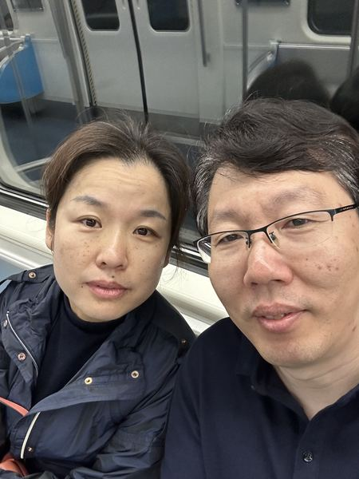
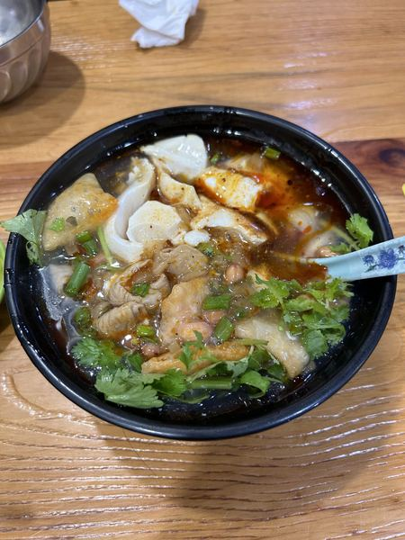
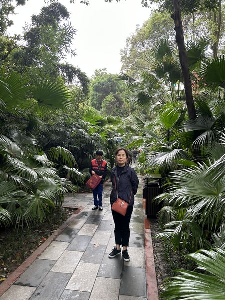
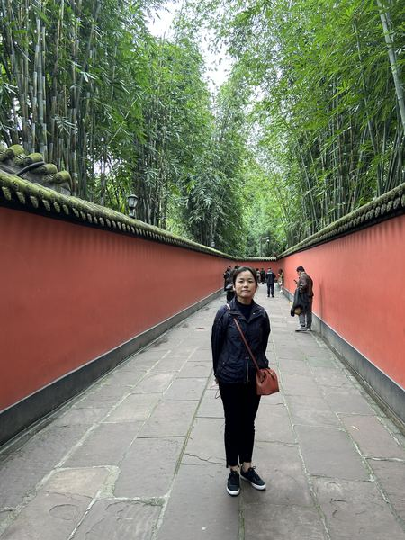
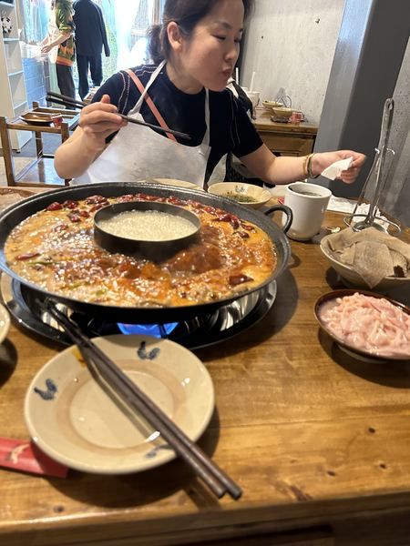
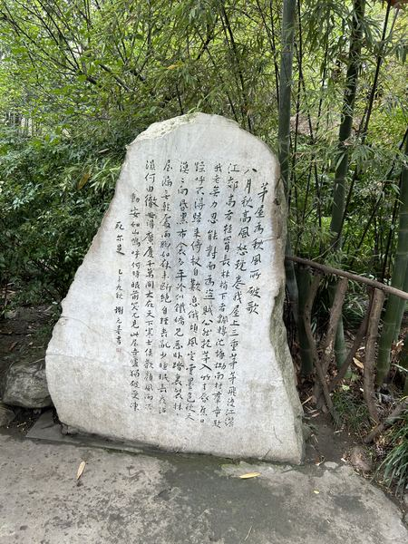
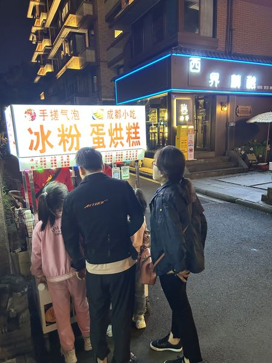
第二天是缓慢的一天，往城北去走亲戚或者闲转，没有刻意的目的地。这种"什么都没做"的一天，往往是最像生活的旅行。
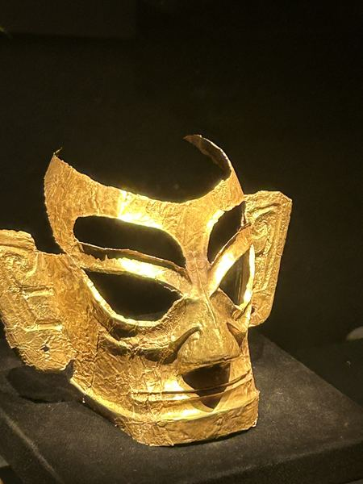
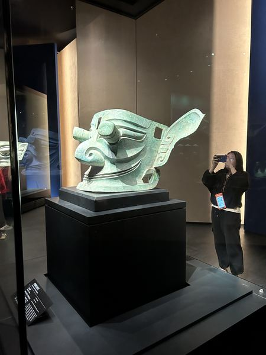
去都江堰那天天阴，岷江反倒因此显出更深的青。鱼嘴把江水劈成两半，一半内江一半外江，李冰留下的活计还在工作。栈道上人不多，水声很大，把说话声盖住了。下午继续往青城方向走了走，山色已是秋意。
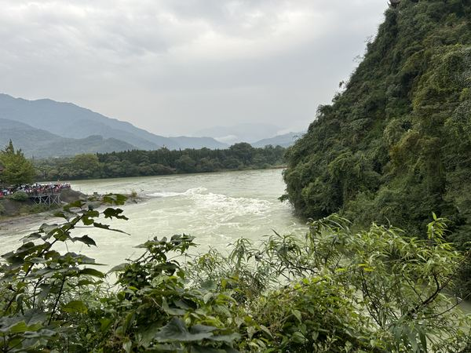
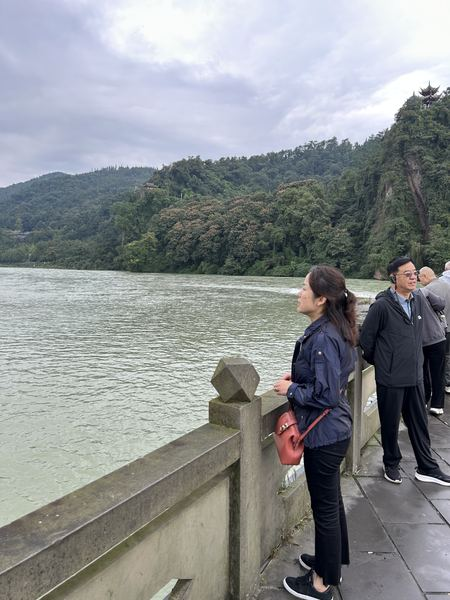
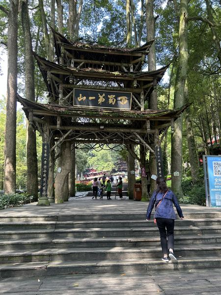
乘船看大佛，比从顶上俯视更动人——你只能仰头，仰到脖子酸，才能勉强对得上他的视线。佛脚下是修缮工事的脚手架，绿色防护网包了大半身，像替这位坐了一千三百年的人披了一件雨衣。江水浑黄，船过留浪。
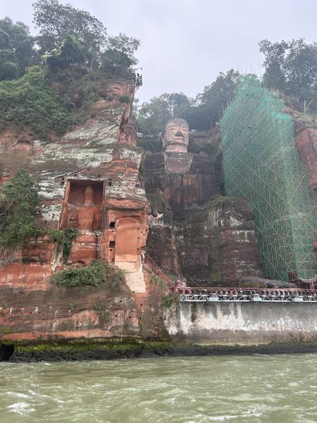
峨眉山的雾是真的浓，能见度十米，前一秒还看得见树梢，后一秒整片山就退回到一张空白宣纸里。半山遇到一只藏酋猴，毛厚得像穿了三件棉袄，蹲在木栏上端详我，比我端详它要从容。下午下到夹江一带，能见度才稍微好转。
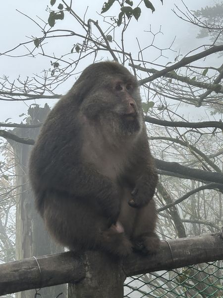
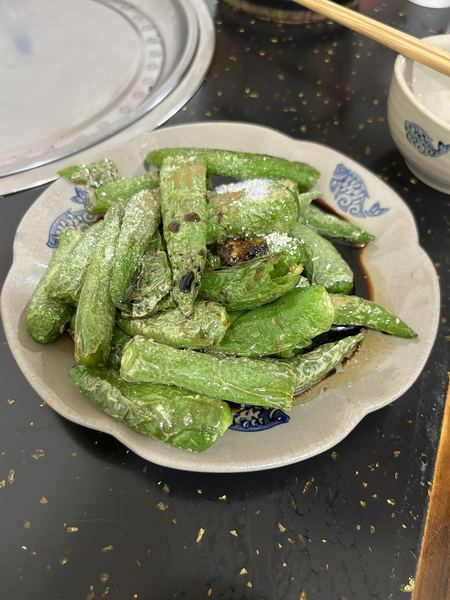
从蜀中翻山到重庆，城市突然立起来了——楼立起来，人立起来，连路也立起来。傍晚六点半，洪崖洞的吊脚楼开始亮灯，金黄一层一层垒上去，倒影泡在嘉陵江里。第二天去了磁器口，老街石板被人脚磨得发亮，街尾一家烤鱼馆，鱼用石板托着出锅，下面的炭还在响。
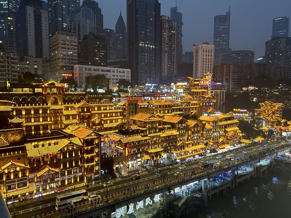
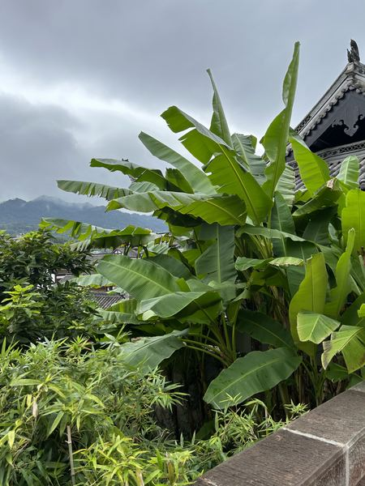
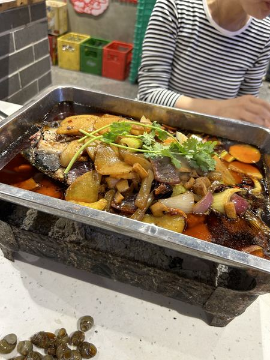
一年之后，又是十月。这次先在武汉停一脚，再一路向西南——丽江的水巷、玉龙雪山的雪线、大理的风、西双版纳潮湿的夜，最后在中科院的热带植物园里把整段旅程收尾。海拔从负数（江汉平原）一路爬到雪山脚下，又下到接近赤道的雨林，像在一周之内换了三个季节。
清晨在江汉关附近坐了趟轮渡，长江把城市切成两半，远处的天际线还在长——塔吊还没拆。晌午吃一锅莲藕排骨汤，瓦罐厚重，藕段粉糯到一筷子断三截，是武汉的一种气定神闲。
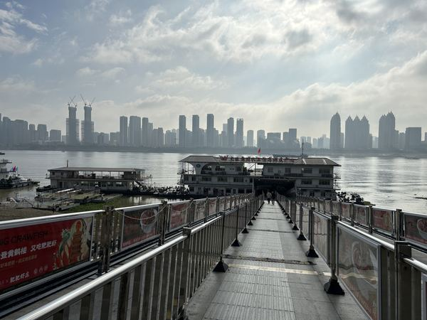
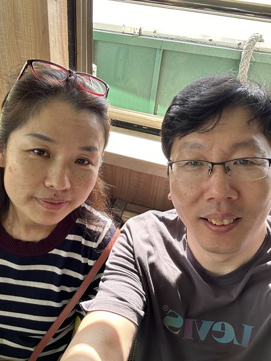
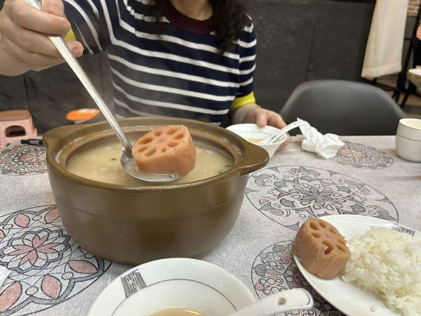
从武汉飞过去，落地的那一刻空气是脆的——海拔两千四的脆。古城的水是顺着青石巷一路淌的，每条巷子尽头都有一座小石桥，桥下小鱼并不怕人。傍晚的酒馆已经亮起灯，但白天的丽江属于猫和晾衣绳。
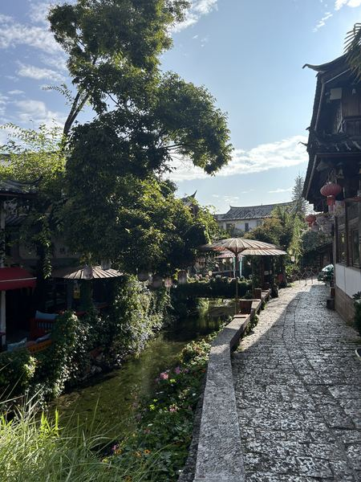
清晨进山，云在山尖上像哈达一样反复缠绕，主峰一忽儿露出来，一忽儿又被吃掉。中午到蓝月谷，水从雪山化下来，落到一道道半月形的白水台上，颜色绿得不真实——是那种你想用手指戳一戳确认是不是颜料的绿。傍晚从山区一路开到大理，海拔降下来，温度也终于不咬人了。落座先点一盘见手青——云南人对野生菌的偏爱，是要冒一点险的，干辣椒和青蒜在油里同炒，菌肉厚实，鲜得发甜。
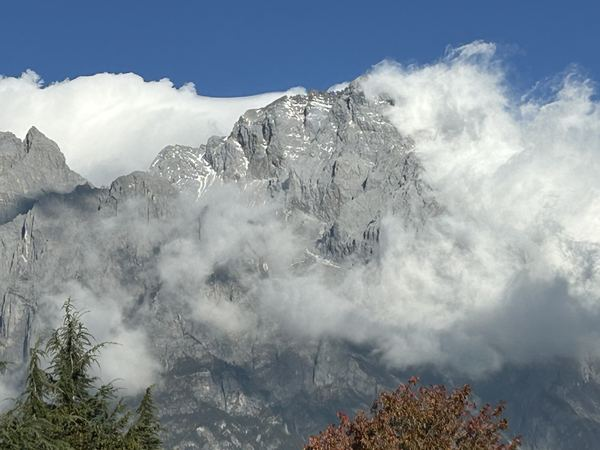
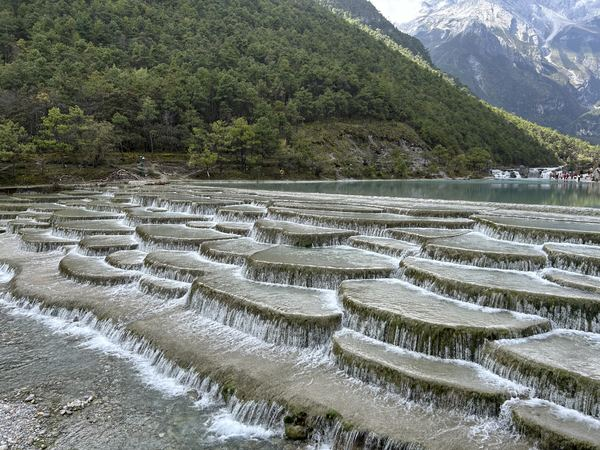
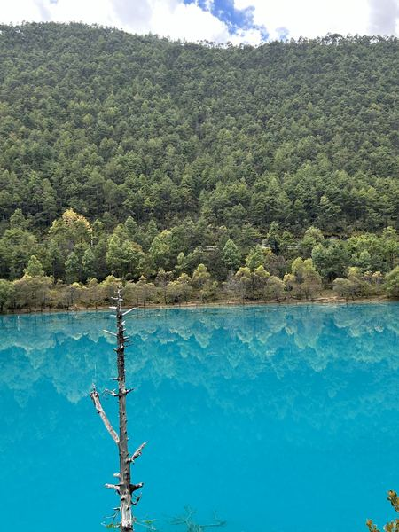
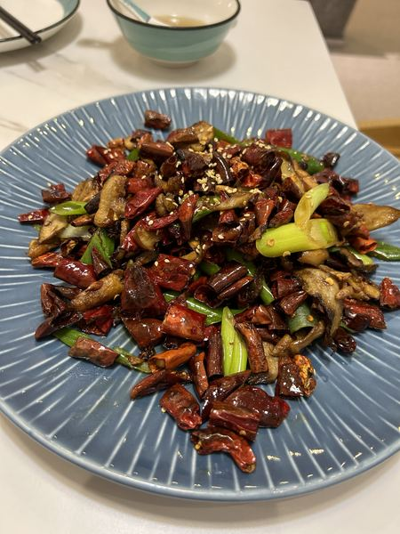
大理是适合慢的。早上去崇圣寺看三塔，主塔笔直立在云下，砖缝里的草都长得有规矩。中午一碗饵丝填胃。下午沿洱海走栈道，风从苍山方向横扫过来，吹得头发不愿意停在原地，远处有人在拍婚纱，海鸥跟船。
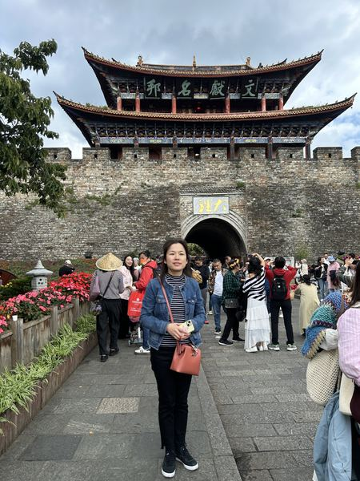
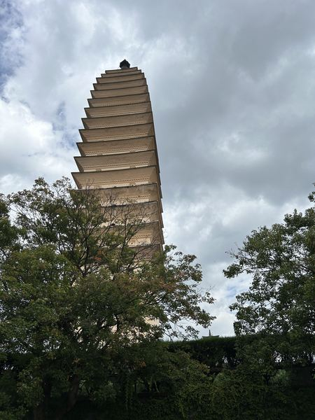
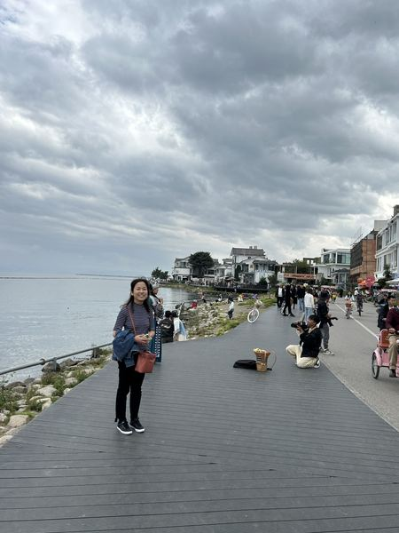
从苍山脚下飞到澜沧江边，气温一下子从十几度跳到三十度，湿度也跟着上来——空气里全是椰子和柠檬叶子的味道。傍晚去告庄西双景，金顶塔群在夜色里灯火通明，像一座专为夜晚而生的城。夜市从八点钟一直热闹到接近午夜，烤罗非鱼的炭香、菠萝饭的甜、傣味手抓饭的辣，全是被赤道宠坏的味道。
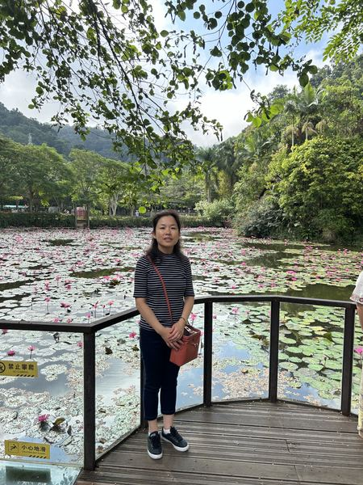
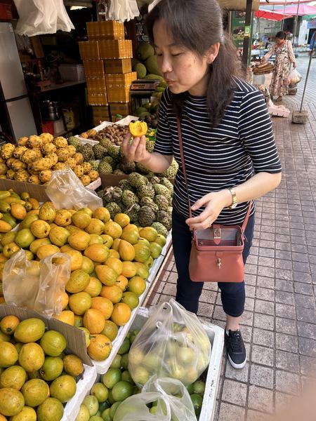
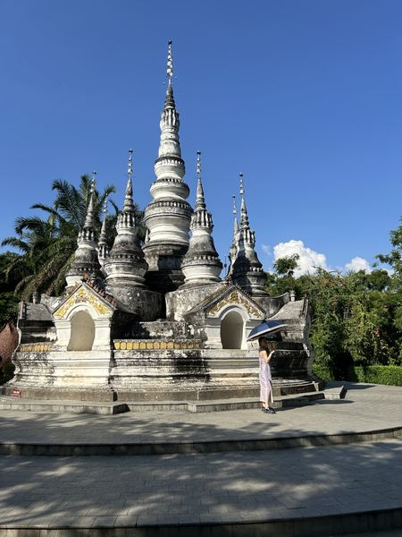
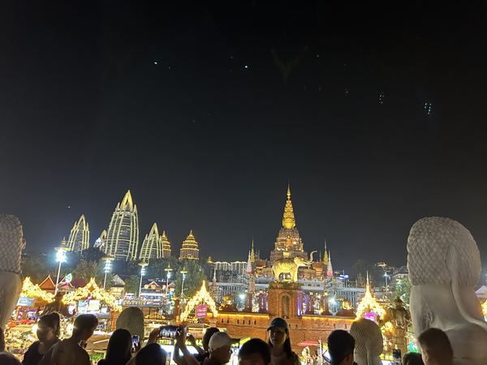
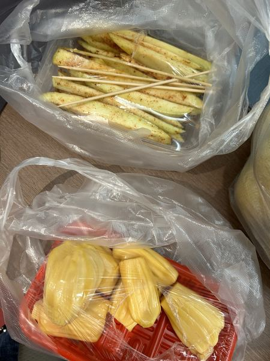
勐仑的植物园是给整段滇行的句号。睡莲铺满半个池塘，粉的白的开了一池；草坪那一带，柚木和棕榈一棵棵立在午后阳光里，云压得很低，但雨没下下来。一个小时也走不完一区，留到下次。
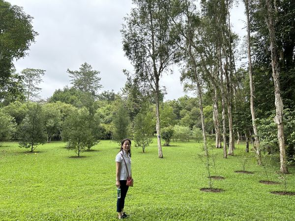
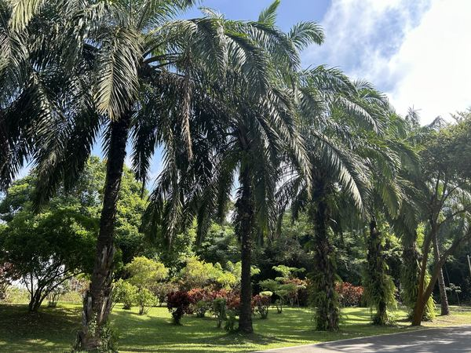
两张近照，落在早春。江南的二月还冷，但已经禁不住了——梅花一枝先开出来，假山间的人也比想象中多。前两次旅行往大山大江里走，这次只是在园子里慢慢踱了两天，节奏完全不同。
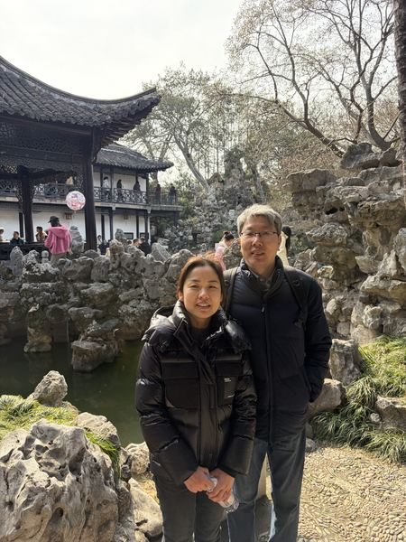
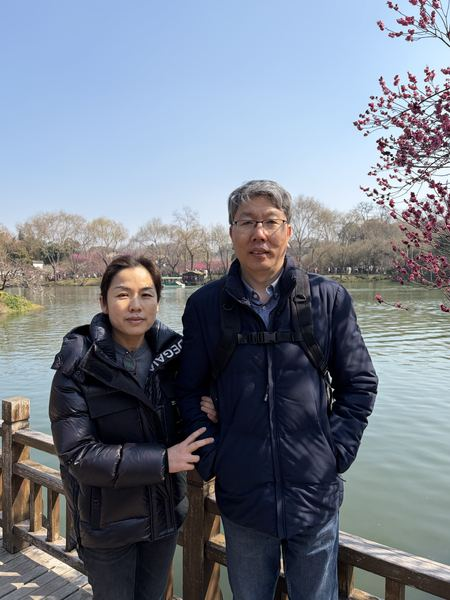
"一枝先发，便是春。"